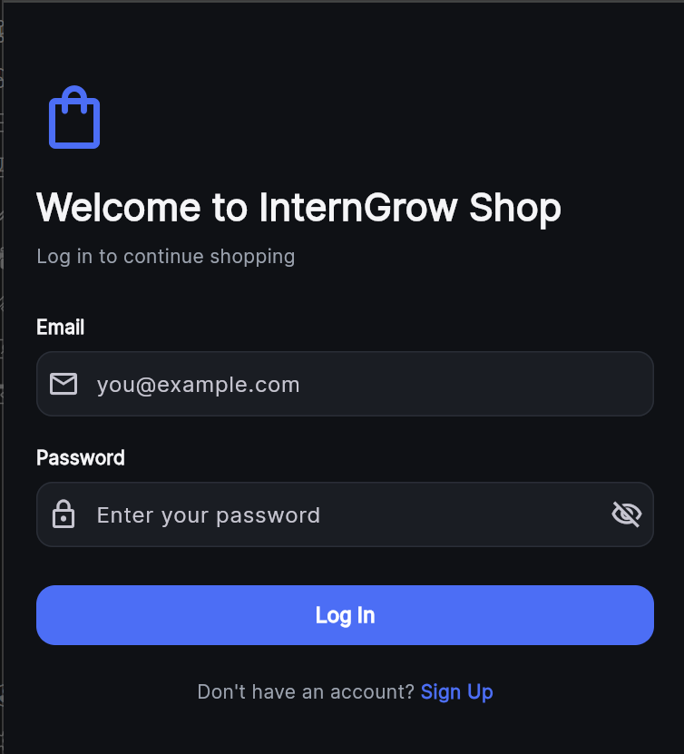
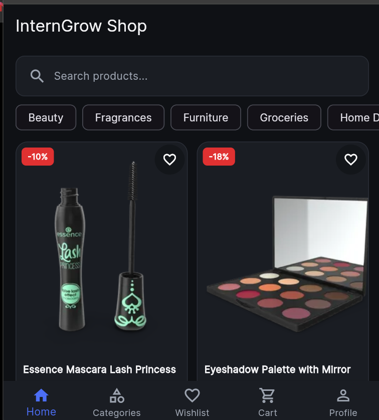
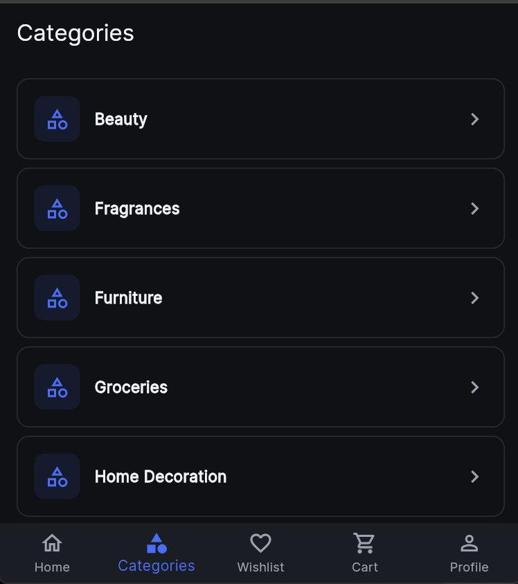

A Flutter mobile application developed during my InternGrow internship, focused on authentication, onboarding, and a clean mobile shopping experience.
This project helped me practice building a structured Flutter mobile application with authentication screens and a multi-screen shopping interface. The application includes login functionality, product browsing, categories, wishlist, cart, and profile navigation.
These screenshots show real screens from the Flutter application, providing visual evidence of the authentication and shopping interface.

Login and authentication screen

Home and product browsing screen

Product categories screen
Through this project, I improved my understanding of Flutter application structure, mobile interface design, authentication screens, navigation, and building reusable UI components for a multi-screen application.
View Project on GitHub